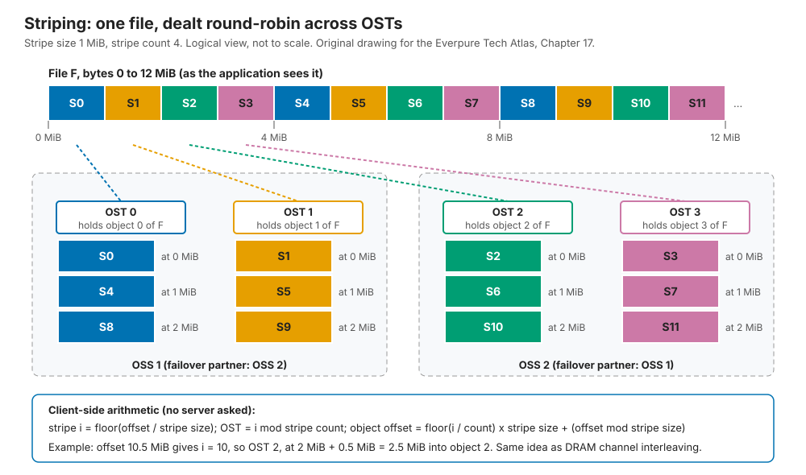

17. Parallel and distributed file systems¶
Depth: L2 · Reading time: ~8 min · Last verified: 2026-11-01 Prerequisites: File protocols · Scale-out shared-nothing clusters · Disaggregated shared-everything
TL;DR¶
- A parallel file system splits "where is it?" from "give me the bytes." A metadata server (MDS) answers once per file; clients then stripe data directly across many object storage servers (OSSs).
- The client is the smart part. A kernel module on every node stripes, locks and speaks RDMA. That gives Lustre and IBM Storage Scale (GPFS) multi-TB/s, and makes them hard to run.
- HPC built them and still runs on them. Lustre is on more than 60% of the Top5001. Early GPU clusters inherited them from HPC teams.
- The walls are metadata, small files and client management. One MDS serialises its namespace, and every kernel upgrade waits for a matching client build.
- The pattern is being rebuilt on standard clients. pNFS designs such as Everpure's FlashBlade//EXA and Hammerspace keep the split but use the stock NFS client2, trading some coherency for easier operations.
Why this matters for Everpure strategy¶
Every large AI storage deal is partly a referendum on the parallel file system. DDN (Lustre as EXAScaler), IBM (Storage Scale) and WEKA all sell parallel file systems with NVIDIA certifications and HPC references. Buyers raised on Lustre judge everything by its bandwidth; those who have run it remember evictions, MDS hot spots and client builds.
FlashBlade//EXA copies Lustre's architecture (a metadata tier, data streamed directly from data nodes) but swaps the proprietary client for pNFS2. Which pain a buyer weighs more decides the deal. Chapter 8 covers the pNFS protocol; Chapter 44 covers DDN.
Core concepts¶
The components¶
Lustre is the reference design, with five parts29:
- Clients run a kernel module that presents an ordinary POSIX mount.
- The MGS (management server) holds configuration; clients read it at mount.
- The MDS serves MDTs (metadata targets) holding the namespace: directories, inodes, permissions and each file's layout, the list of OST objects holding its data.
- The OSS serves OSTs (object storage targets): local ldiskfs or ZFS file systems on RAID-protected devices, holding file data as objects.
- LNet is the network layer: RDMA over InfiniBand or RoCE, or TCP, with routing between fabrics.
flowchart LR
subgraph CL["Compute and GPU nodes"]
C1["Client 1"]
C2["Client 2"]
C3["Client N"]
end
NET["LNet fabric: IB, RoCE or TCP"]
C1 --- NET
C2 --- NET
C3 --- NET
NET --- MGS["MGS + MGT: config"]
NET --- MDS1["MDS 1: MDT0 namespace"]
NET --- MDS2["MDS 2: MDT1 via DNE"]
NET --- OSS1["OSS 1: OST0, OST1"]
NET --- OSS2["OSS 2: OST2, OST3"]
MDS1 -. "failover pair" .- MDS2
OSS1 -. "failover pair" .- OSS2Figure 17.1 — Lustre separates a small metadata tier from a wide data tier, and both sit behind the same RDMA fabric that clients reach directly.
The ratio is the design: Frontier's 679 PB Orion file system has 40 metadata servers and 450 storage servers3.
Striping: memory interleaving for files¶
A layout has two main parameters: stripe size, the chunk size (commonly 1 MiB by default), and stripe count, how many OSTs the chunks are dealt across (commonly 1)4. Both are set per file or directory; Progressive File Layouts (2.10) widen the count as a file grows5.

Figure 17.2 — The client computes which OST holds any byte without asking a server, exactly as a memory controller picks a DRAM channel from address bits.
Semiconductor bridge. This is channel interleaving: consecutive lines spread across channels so a stream uses all of them. The failure modes match. Interleave too finely and every access touches every bank; let an access stride align with the pattern and all clients hammer one OST, the "partition camping" GPU programmers know.
Worked example (why stripe count matters). Assume each OST sustains 5 GB/s (illustrative). A 405B-parameter checkpoint is about 6.5 TB. As one shared file with stripe count 1, it lands on one OST: 6.5 TB ÷ 5 GB/s ≈ 1,300 s, 22 minutes of idle GPUs. Stripe count 64 gives 320 GB/s and about 20 s. Wider is not free: every client then locks every OST, and one slow OST stalls the write, so checkpoint libraries usually write one file per rank.
Tracing a write¶
sequenceDiagram
participant C as Client
participant M as MDS and MDT
participant O1 as OSS 1 OST0
participant O2 as OSS 2 OST2
C->>M: open with create intent
M->>M: allocate inode, choose OSTs, assign precreated objects
M-->>C: file handle, layout, metadata lock
C->>C: map offsets to OSTs from stripe size and count
par stripes in parallel over RDMA
C->>O1: extent lock, then write stripes 0, 4, 8
C->>O2: extent lock, then write stripes 2, 6, 10
end
O1-->>C: reply with transaction number
O2-->>C: reply with transaction number
Note over C,O2: Client keeps data until OSTs report the commit, for replay after a crash
C->>M: closeFigure 17.3 — The MDS is touched at open and close; the bytes flow straight from client to many OSSs at once.
OSTs grant byte-range extent locks through Lustre's distributed lock manager, so clients writing different ranges of one file proceed in parallel and stay coherent. That POSIX coherency for shared-file writes is what the kernel module buys; NFS's close-to-open model is weaker (Chapter 8).
Tracing a read¶
sequenceDiagram
participant C as Client
participant M as MDS and MDT
participant O1 as OSS 1 OST0
participant O2 as OSS 2 OST2
alt layout not cached
C->>M: lookup and open
M-->>C: layout and read lock
else layout cached under a valid lock
C->>C: no MDS round trip needed
end
par read stripes in parallel
C->>O1: read lock, read stripes 0, 4, 8
C->>O2: read lock, read stripes 2, 6, 10
end
O1-->>C: RDMA bulk data
O2-->>C: RDMA bulk data
C->>C: reassemble in page cacheFigure 17.4 — With the layout cached, a read never touches the metadata server, which is why large sequential reads scale almost linearly with OSS count.
Semiconductor bridge. The MDS is the directory or tag lookup before the data access; the cached layout is a TLB entry, and a lock callback is a TLB shootdown.
Failure handling¶
| Failure | What happens | Blast radius / cost |
|---|---|---|
| Drive | RAID or ZFS under the OST rebuilds locally. Lustre itself does not see it. | Degraded OST bandwidth during rebuild; one slow OST slows every file striped over it. |
| OSS server | Its partner in the failover pair mounts the OSTs from shared, dual-ported storage. Clients reconnect and replay uncommitted requests6. | I/O to those OSTs pauses for the recovery window. Pairs need shared enclosures and fencing. |
| MDS | Same pattern, with a standby or a DNE peer taking over the MDT. | Namespace operations stall cluster-wide while it recovers. |
| Client or its link | If a client misses a lock callback before the timer expires, the server evicts it and reclaims its locks7. | Dirty data in that client's cache is lost and applications see I/O errors, a frequent operational complaint. |
| Whole OST lost | Data striped over it is gone unless the file was mirrored. File Level Redundancy has existed since Lustre 2.11, but it is opt-in5. | Protection is per-server, not cross-server erasure coding as in shared-nothing systems. |
Table 17.1 — Classic Lustre protects data inside each server pair and relies on fast failover. The client, not the hardware, is the weakest link in daily operation.
Where it hits walls¶
- Metadata serialisation. One MDT handles every create, open and stat in its namespace slice. Distributed Namespace (DNE) added remote directories in 2.4 and directories striped across MDTs in 2.85, yet ORNL still found shared-directory workloads bottlenecked on one MDT8. Scaling needs the workload to spread out.
- Small files. Worked example: a billion 100 KB images (100 TB) read in 100 s at 1 TB/s. At an illustrative 50,000 opens/s per MDT [VERIFY: representative per-MDT open rate on current hardware], the opens take 20,000 s (5.6 hours), 200 times longer. Data-on-MDT (2.11) keeps tiny files on the MDT to save a round trip5. AI training looks exactly like this (Chapter 21).
- Client software management. The client left mainline Linux in 2018; a 2025 effort aims to upstream it again9. Meanwhile every kernel update waits for a matching client build.
- Kernel dependence and tenancy. A kernel module on thousands of GPU nodes is a security and change-control burden neoclouds dislike, and multi-tenancy came late: Lustre 2.17 (December 2025) headlined dynamic nodemaps10.
Pros, cons and fit¶
| Strength | Weakness | |
|---|---|---|
| Bandwidth | Near-linear with OSS count; RDMA end to end | Sensitive to stripe settings and to the slowest OST |
| Semantics | Full POSIX, coherent shared-file writes | Locks require eviction to resolve dead clients |
| Metadata | Simple and fast per MDT | Serialisation point; DNE needs workload cooperation |
| Cost | Open source (Lustre) on commodity or appliance hardware | Specialist staff; pair-wise HA hardware; little data reduction |
| Operations | Mature tooling, 25 years of HPC experience | Kernel client lifecycle; tuning is a craft |
Table 17.2 — Parallel file systems trade operational simplicity for raw, coherent bandwidth.
Best fit: large-file streaming (simulation output, checkpoints, video), many ranks writing one file, sites with an HPC operations team. Worst fit: billions of tiny files, multi-tenant clouds with mixed kernels, enterprise shares needing SMB, snapshots and data reduction, and small clusters where fixed MDS and failover-pair costs dominate.
Why HPC built them and AI inherited them¶
Late-1990s simulations on thousands of nodes dumped memory simultaneously, overwhelming NFS's single head. Lustre began as a Carnegie Mellon research project in 19991; IBM's GPFS shipped in 199811. The IO500 list, started at SC17, ranks systems by a geometric mean of bandwidth and metadata scores12; Lustre accounts for nearly half its entries [VERIFY: search-summary only]13.
Early AI training looked like HPC: synchronous jobs, giant checkpoints, InfiniBand, lab-trained buyers. NVIDIA reference architectures and the clouds followed: AWS launched FSx for Lustre in 201814, Google's Managed Lustre runs DDN EXAScaler15, and Azure Managed Lustre entered MLPerf Storage in 202616. AI added what HPC tolerated badly: billions of small files, churning inference fleets, tenants refusing kernel modules. WEKA, VAST and pNFS designs compete in that gap.
Cost and operational implications¶
Lustre is free; expertise is not. Sites pay for appliance support or a managed service, buy paired servers on shared enclosures, accept RAID overhead (20% for 8+2) with little data reduction, and absorb hidden costs: GPU time lost to evictions and MDS stalls, and staff time tuning stripes.
How Everpure approaches it vs. competitors¶
| System | Metadata design | Client / data path | Protection | AI positioning |
|---|---|---|---|---|
| Lustre / DDN EXAScaler | MDS/MDT, scaled by DNE | Kernel client, LNet RDMA | RAID under OSTs, failover pairs | AI400X-series appliances; Google Cloud Managed Lustre1715 |
| IBM Storage Scale (GPFS) | Distributed: any node can manage metadata, with token-based locking | Kernel client; shared-disk (NSD) or shared-nothing | RAID or erasure coding | NVIDIA-certified "AI Data Platform" (6.0.1, June 2026)1118 |
| BeeGFS (ThinkParQ) | Separate metadata services, namespace split by directory | Kernel client | Buddy mirroring of targets | v8.2 (Nov 2025) added background rebalancing19 |
| WEKA NeuralMesh | Metadata sharded into "buckets" across all nodes, with no dedicated MDS | Proprietary client: user-space DPDK data path plus a WEKA kernel driver for the POSIX mount | Distributed erasure coding | Converged and cloud modes; KV-cache extension2021 |
| Hammerspace | Anvil metadata servers | pNFS Flex Files, stock Linux client | Delegated to underlying NFS storage | Parallel NFS co-developed for Meta's GenAI clusters22 |
| Everpure FlashBlade//EXA | FlashBlade metadata core running Purity | pNFS: metadata over NFSv4.1/TCP, data over NFSv3/RDMA to data nodes; stock client | Data-node scheme maturing [VERIFY: current data-node protection] | MLPerf Storage v3.0 checkpoint result216 |
Table 17.3 — Every design keeps the metadata/data split. They differ in where metadata lives, how heavy the client is, and who protects the data.
Is FlashBlade//EXA a parallel file system? Architecturally, yes: the metadata core plays the MDS role, data nodes play the OSS role, and clients move bytes directly to data nodes2. The differences are deliberate: metadata runs on Purity across a scale-out blade cluster, not one MDT, and the client is stock Linux NFS. In MLPerf Storage v3.0, 30 EXA data nodes posted 877.5 GiB/s of checkpoint writes (327.6 GiB/s with 10 data nodes) against Azure Managed Lustre's 642.2 GiB/s from 128 clients, on different configurations1623.
Steelman the incumbents. Lustre and Storage Scale give coherent shared-file writes NFS lacks, plus decades of exascale references; Lustre's open-source license appeals to sovereign and lab buyers; WEKA sidesteps the MDS bottleneck by sharding metadata across every node. Options a strategy team might evaluate, based on public information: target HPC-heritage AI buyers whose pain is client management and metadata; publish IO500-style metadata results beside bandwidth; and address shared-file-write semantics before they become a late objection.
History and trajectory¶
timeline
title Parallel file system milestones
1998 : IBM ships GPFS on AIX
1999 : Lustre starts as a Carnegie Mellon research project
2007 : Sun acquires Cluster File Systems
2012 : Intel buys Whamcloud
2013 : Lustre 2.4 adds DNE remote directories
2014 : ThinkParQ spun out of Fraunhofer for BeeGFS
2017 : First IO500 list at SC17
2018 : DDN buys Intel Lustre business : AWS launches FSx for Lustre : Lustre client leaves mainline Linux
2023 : Spectrum Scale renamed IBM Storage Scale
2025 : Pure Storage launches FlashBlade EXA on pNFS : Effort to upstream Lustre client : Lustre 2.17
2026 : Azure Managed Lustre in MLPerf StorageFigure 17.5 — Lustre outlived four changes of owner and kept its HPC lead; managed cloud services now extend it while standard-client designs attack it from below.
IBM dropped the Spectrum brand in 2023, making GPFS "IBM Storage Scale"24. Lustre changed hands four times: Cluster File Systems to Sun (2007), Oracle (2010, with Sun), Intel (2012, via Whamcloud) and DDN (2018)252627. In 2020 it ran on 77 of the top 100 systems, Spectrum Scale on 2328. Going forward, clouds absorb the operational burden, upstreaming may end the kernel-module tax, and pNFS rebuilds the architecture on standard clients.
Numbers that matter¶
| Metric | Value | Context | Source / date |
|---|---|---|---|
| Lustre share of Top500 | >60% of top 500; >65% of top 100 | ACM Transactions on Storage | ORNL et al., 2025-061 |
| Orion (Frontier) namespace | 679 PB; 40 MDS vs 450 storage servers | Capacity tier 5.5 TB/s read; NVMe tier ~10 TB/s | OLCF3 |
| Default stripe size / count | 1 MiB / 1 | Common site default; tuned per directory | HPE, Lustre wiki4 |
| Single-OST vs 64-OST checkpoint | ~22 min vs ~20 s | 6.5 TB at 5 GB/s per OST (illustrative) | Worked example |
| Metadata vs data time, 1B small files | ~5.6 h vs 100 s | 50k opens/s per MDT (illustrative); 1 TB/s | Worked example |
| EXA checkpoint write, MLPerf v3.0 | 877.5 GiB/s | 30 data nodes; Azure Managed Lustre 642.2 GiB/s | StorageReview, 2026-0916 |
| Lustre on top 100 (2020) | 77 systems; Spectrum Scale 23 | HPE analysis | HPE, 2020-1128 |
Conversation playbook¶
Questions for a PM
- "When a Lustre shop evaluates EXA, what is the first objection?" Strong: names shared-file writes, shows where close-to-open is safe (per-rank checkpoints, read-mostly data), cites a reference.
- "Do buyers value metadata rate or bandwidth more?" Strong: EXA creates and opens per second at a stated size, beside bandwidth, tied to a billion-file dataset.
- "How do we beat Google or Azure Managed Lustre for cloud-adjacent buyers?" Strong: data gravity, egress, price per TB/s, as-a-service.
Questions for an engineer
- "What is EXA's equivalent of a Lustre eviction? What does a client see if it hangs mid-write?" Strong: layout recall, lease expiry, recovery time, fate of in-flight writes.
- "Does one hot directory scale across the metadata core?" Strong: says whether a single directory spans blades, unlike Lustre's single-MDT limit.
- "Who sets stripe width, and can a bad user setting hurt neighbours?" Strong: server-chosen layouts versus Lustre-style user tuning.
Don't say this:
- "Lustre is legacy." It runs most of the largest systems, and three hyperscalers sell it as a managed service.
- "Parallel file systems can't scale metadata." DNE, GPFS and WEKA distribute it; the question is how evenly the workload spreads.
- "pNFS is Lustre with NFS." It drops the kernel module but also Lustre's coherent shared-file locking.
- "Wider striping is always faster." It multiplies locks and makes the slowest OST everyone's problem.
- "GPFS is IBM's Lustre." GPFS has no dedicated metadata server; it uses distributed tokens on a shared-disk heritage.
Going deeper (optional, L3 pointers)¶
- George et al., "Lustre Unveiled," ACM Transactions on Storage, 20251; ORNL, Understanding Lustre Internals, 2nd ed.29
- Schmuck and Haskin, "GPFS: A Shared-Disk File System for Large Computing Clusters," FAST 200211.
- Lustre's LDLM lock manager, imperative recovery and Progressive File Layouts; IOR and mdtest, the IO500 tools.
Key terms¶
- MDS / MDT — metadata server and its target holding namespace and layouts.
- OSS / OST — object storage server and its targets holding file data.
- MGS — Lustre's configuration server.
- LNet — Lustre's RDMA-capable network layer.
- Stripe size / count — chunk size; number of OSTs a file spans.
- DNE — namespace spread across several MDTs.
- Client eviction — a server dropping an unresponsive client's locks.
- See the glossary for the rest.
Sources¶
-
R. S. George, A. Dilger et al. (ORNL and others), "Lustre Unveiled: Evolution, Design, Advancements, and Current Trends," ACM Transactions on Storage 21(3), 2025-06. DOI 10.1145/3736583. https://www.ornl.gov/publication/lustre-unveiled-evolution-design-advancements-and-current-trends (retrieved 2026-11-01). ↩↩↩↩
-
Everpure, "Technical Brief: FlashBlade//EXA," n.d. (2025). https://www.everpuredata.com/content/dam/pdf/en/technical-briefs/tb-flashblade-exa.pdf (retrieved 2026-11-01); Blocks & Files, "How Pure Storage developed its disaggregated FlashBlade//EXA system," 2025-04-17. https://blocksandfiles.com/2025/04/17/how-pure-storage-developed-its-disaggregated-flashblade-exa-system/ (retrieved 2026-11-01). ↩↩↩↩
-
Oak Ridge Leadership Computing Facility, "Frontier User Guide" (Orion file system), n.d. https://docs.olcf.ornl.gov/systems/frontier_user_guide.html (retrieved 2026-11-01); S. Brim (ORNL), "Deep dive," ATPESC 2023 Track 7, 2023-08. https://extremecomputingtraining.anl.gov/wp-content/uploads/sites/96/2023/08/ATPESC-2023-Track-7-Talk-4-Brim-deep-dive.pdf (retrieved 2026-11-01). ↩↩
-
HPE, "Configure Striping on Lustre File Systems," n.d. https://www.hpe.com/psnow/resources/ebooks/a00113982en_us_v2/Configure_Striping_on_Lustre_File_Systems.html (retrieved 2026-11-01); Lustre Wiki, "Understanding Lustre Internals," n.d. https://wiki.lustre.org/index.php?diff=4077&oldid=4072&title=Understanding_Lustre_Internals (retrieved 2026-11-01). ↩↩
-
A. Dilger, "Lustre 2.8 and Beyond," OpenSFS LUG, 2015-04. https://www.opensfs.org/wp-content/uploads/2015/04/Lustre-2.8-and-Beyond_Dilger.pdf; A. Dilger, "Lustre 2.11 and Beyond," LUG 2017, 2017-06. https://opensfs.org/wp-content/uploads/2017/06/Thur05-DilgerAndreas-LUG2017-Lustre202.1120and20Beyond-FINAL.pdf (both retrieved 2026-11-01). ↩↩↩↩
-
Lustre Wiki, "Lustre Recovery Overview," n.d. https://wiki.lustre.org/Lustre_Recovery_Overview (retrieved 2026-11-01). ↩
-
Lustre Wiki, "Lustre Client Eviction Guide," n.d. https://wiki.lustre.org/Lustre_Client_Eviction_Guide (retrieved 2026-11-01); Lustre Wiki, "Lustre Resiliency: Understanding Lustre Message Loss and Tuning for Resiliency," n.d. https://wiki.lustre.org/Lustre_Resiliency:_Understanding_Lustre_Message_Loss_and_Tuning_for_Resiliency (retrieved 2026-11-01). ↩
-
J. Simmons et al. (ORNL), "Evaluation of DoM and DNE scaling," OpenSFS, 2021-05. https://www.opensfs.org/wp-content/uploads/Evaluation-of-DoM-SNE-scaling_Simmons_revised051821.pdf (retrieved 2026-11-01). ↩
-
The Register, "Linux 4.18-rc1 removes Lustre filesystem," 2018-06-18. https://www.theregister.com/2018/06/18/linux_4_18_rc_1_removes_lustre_filesystem/ (retrieved 2026-11-01); J. Edge, LWN.net, "Getting Lustre upstream," 2025-06-18. https://lwn.net/Articles/1025268 (retrieved 2026-11-01). ↩
-
Lustre.org, "Lustre 2.17.0 released," 2025-12. https://www.lustre.org/?p=777 (retrieved 2026-11-01). ↩
-
F. Schmuck and R. Haskin (IBM Almaden), "GPFS: A Shared-Disk File System for Large Computing Clusters," USENIX FAST 2002. https://www.usenix.org/legacy/events/fast02/full_papers/schmuck/schmuck.pdf (retrieved 2026-11-01); IBM, "Storage Scale 101: Basics and architecture," 2025. https://www.ibm.com/support/pages/system/files/inline-files/Storage%20Scale%20101%20-%20Basics%20and%20architecture%20(1).pdf (retrieved 2026-11-01). ↩↩↩
-
S. Ihara (DDN), "IO500 update," LAD 2023, 2023-10. https://www.eofs.eu/wp-content/uploads/2024/02/07-LAD2023-ShuichiIhara-1005-1.pdf (retrieved 2026-11-01); LANL et al., "IO-500 proposal," ISC 2017 BoF, 2017-06. https://www.vi4io.org/_media/17-isc-bof-io-500-proposal.pdf (retrieved 2026-11-01). ↩
-
SC25 Birds-of-a-Feather, "Lustre community BoF" abstract (OpenSFS), 2025-11. https://sc25.supercomputing.org/proceedings/bof/bof_pages/bof197.html (retrieved 2026-11-01; seen via search summary only). ↩
-
AWS, "Introducing Amazon FSx for Lustre," 2018-11-28. https://aws.amazon.com/about-aws/whats-new/2018/11/amazon-fsx-lustre/ (retrieved 2026-11-01). ↩
-
DDN via Business Wire, "DDN Announces Collaboration with Google Cloud to Advance AI Initiatives with Google Cloud Managed Lustre and Infinia at Google Cloud Next 2025," 2025-04-09. https://www.businesswire.com/news/home/20250409046523/en/ (retrieved 2026-11-01). ↩↩
-
StorageReview, "MLPerf Storage v3.0: 877 GiB/s Checkpoints, a Cloud First, and a Leaderboard Turned Over," 2026-09. https://www.storagereview.com/news/mlperf-storage-v3-0-877-gib-s-checkpoints-a-cloud-first-and-a-leaderboard-turned-over (retrieved 2026-11-01); HPCwire, "Everpure Leads MLPerf Storage Tests for Large Model Checkpointing and KV Cache," 2026-09-02. https://hpcwire.com/off-the-wire/everpure-leads-mlperf-storage-tests-for-large-model-checkpointing-and-kv-cache (retrieved 2026-11-01). ↩↩↩↩
-
DDN, "DDN Boosts AI Storage Leadership with EXAScaler 6," n.d. https://www.ddn.com/press-releases/ddn-boosts-ai-leadership-with-exascaler-6 (retrieved 2026-11-01); DDN, "DDN launches AI400X3 and Infinia 2.1 at ISC 2025," 2025-06. https://www.ddn.com/blog/ddn-launches-ai400x3-and-infinia-2.1-at-isc-2025/ (retrieved 2026-11-01). ↩
-
IBM Community, "Introducing IBM Storage Scale 6.0.1 and Storage Scale System 7.0.1: An AI-Ready Data Platform," 2026-06-08. https://community.ibm.com/community/user/blogs/mike-kieran/2026/06/08/introducing-ibm-storage-scale-601-and-storage-scal (retrieved 2026-11-01). ↩
-
ThinkParQ, "ThinkParQ launches BeeGFS 8.2," 2025-11-12. https://thinkparq.com/wp-content/uploads/2025/11/ThinkParQ-launches-BeeGFS-8.2-.pdf (retrieved 2026-11-01). ↩
-
WEKA, "The WEKA Data Platform" (architecture white paper), n.d. https://weka.io/?p=39534 (retrieved 2026-11-01); WEKA, "Networking in WEKA" (docs v5.0), n.d. https://docs.weka.io/5.0/weka-system-overview/networking-in-wekaio (retrieved 2026-11-01). ↩
-
WEKA, "WEKA Introduces NeuralMesh," 2025-06-17. https://www.weka.io/company/weka-newsroom/press-releases/weka-introduces-neuralmesh/ (retrieved 2026-11-01). ↩
-
Hammerspace, "Hyperscale NAS," n.d. https://hammerspace.com/hyperscale-nas/ (retrieved 2026-11-01); Meta Engineering, "Building Meta's GenAI Infrastructure," 2024-03-12. https://engineering.fb.com/2024/03/12/data-center-engineering/building-metas-genai-infrastructure/ (retrieved 2026-11-01). ↩
-
Microsoft, "Azure Managed Lustre MLPerf Storage v3.0 results," n.d. (2026). https://docs.azure.cn/en-us/azure-managed-lustre/mlperf-storage-v3-results (retrieved 2026-11-01). ↩
-
Blocks & Files, "Spectrum no more: IBM dropping brand name for storage products," 2023-02-24. https://blocksandfiles.com/2023/02/24/spectrum-no-more-ibm-dropping-brand-name-for-storage-products/ (retrieved 2026-11-01). ↩
-
InfoWorld, "Oracle to continue supporting Lustre" (Lustre acquired with Sun; Sun bought Cluster File Systems in 2007), 2010. https://www.infoworld.com/article/2624999/oracle-to-continue-supporting-lustre.html (retrieved 2026-11-01). ↩
-
The Register, "Intel buys Whamcloud," 2012-07-16. https://www.theregister.com/2012/07/16/intel_buys_whamcloud/ (retrieved 2026-11-01). ↩
-
TOP500.org, "DDN Acquires Lustre Business from Intel," 2018-06. https://www.top500.org/news/ddn-acquires-lustre-business-from-intel/ (retrieved 2026-11-01). ↩
-
HPE Community, "It's lonely at the top: Lustre continues to dominate top 100," 2020-11. https://community.hpe.com/t5/servers-systems-the-right/it-s-lonely-at-the-top-lustre-continues-to-dominate-top-100/ba-p/7109668 (retrieved 2026-11-01). ↩↩
-
Oak Ridge National Laboratory, "Understanding Lustre Internals, Second Edition" (covers Lustre 2.15), n.d. https://www.ornl.gov/publication/understanding-lustre-internals-second-edition (retrieved 2026-11-01); Lustre Wiki, "Lustre Architecture for Admins," n.d. https://wiki.lustre.org/index.php?oldid=5478&title=Lustre_Architecture_for_Admins (retrieved 2026-11-01). ↩↩